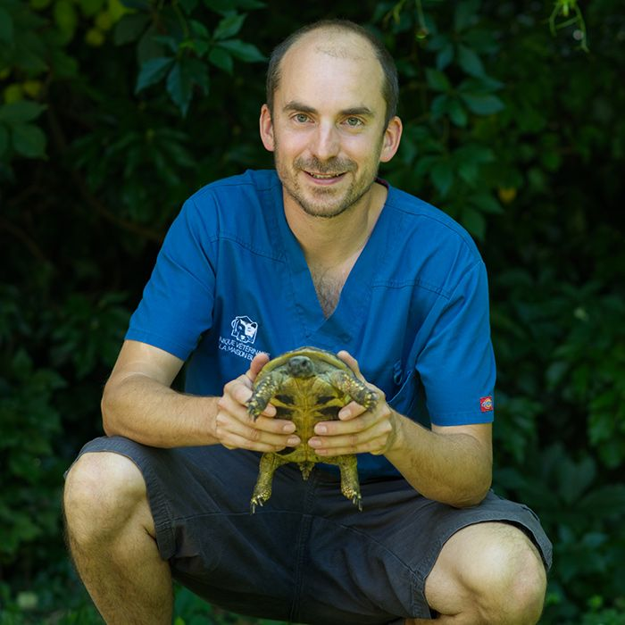
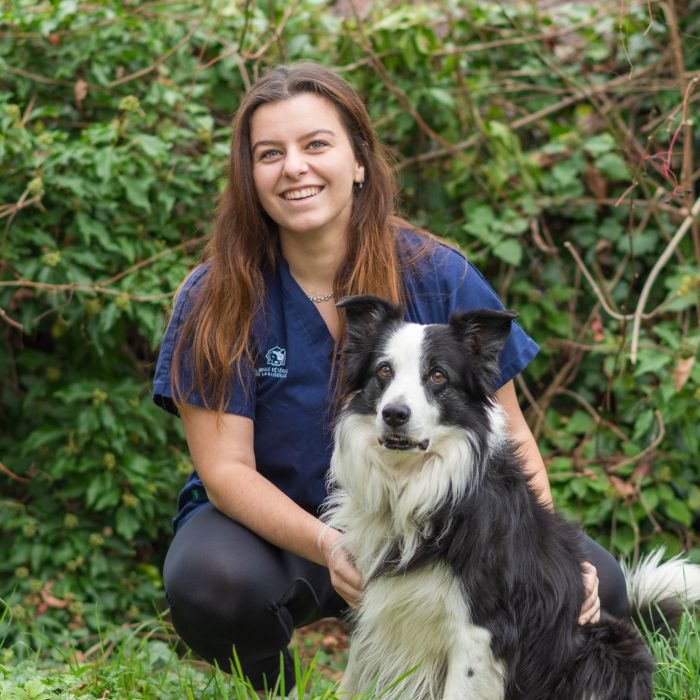
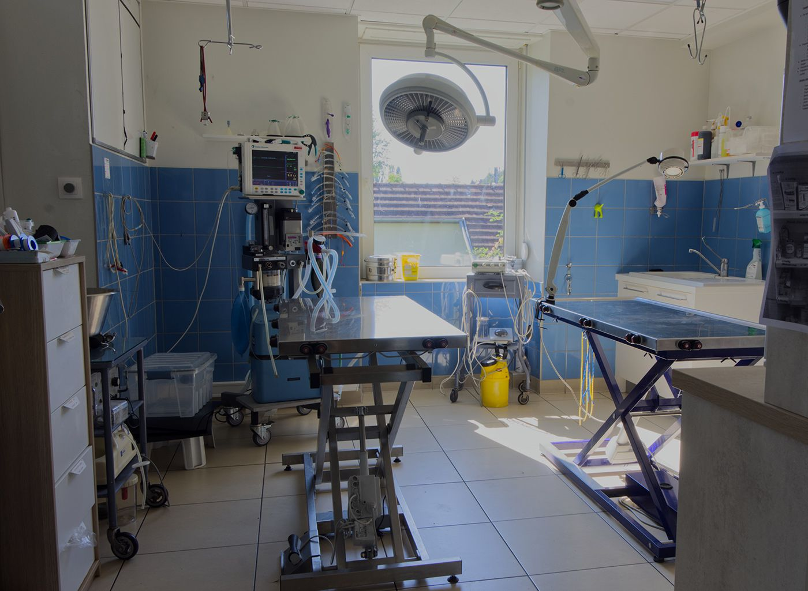
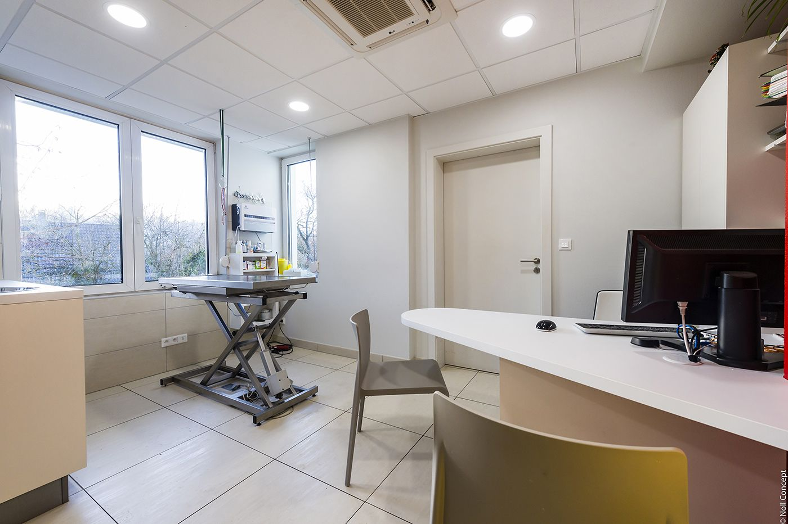
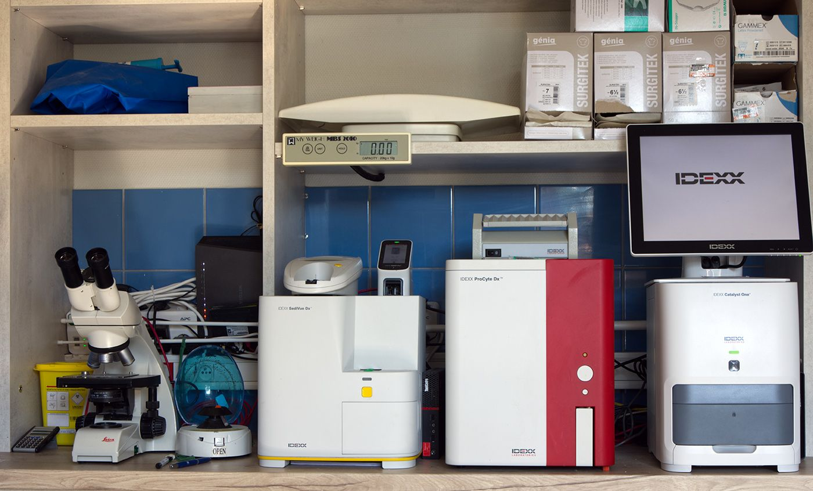
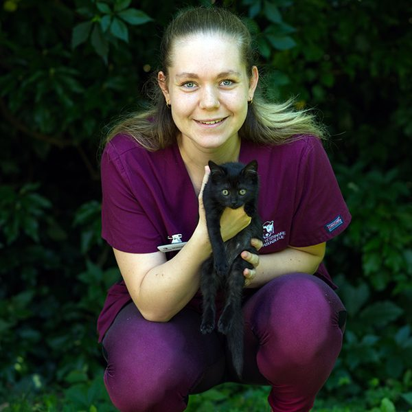

Bienvenue à la Maison Bleue
Toute l'équipe est à votre écoute pour répondre au mieux aux besoins de vos chats, chiens et rongeurs de tous poils.





6 vétérinaires et 6 auxiliaires
Urgences assurées 24h/24

- Locaux rénovés
- Accès PMR
- Climatisé
Tout ce dont votre compagnon a besoin
Consultation, imagerie, chirurgie et hospitalisation : tout se fait sur place.
Médecine
Consultations, vaccinations, prévention et suivi de vos compagnons tout au long de leur vie.
 Salle de consultation 1
Salle de consultation 1Chirurgie
Une salle d'opération équipée pour réaliser les interventions dans les meilleures conditions.

Salle d'opérationRadiologie
Une salle de radiologie sur place pour poser un diagnostic rapidement.
 Salle de radiologie
Salle de radiologieÉchographie
Un examen d'imagerie non invasif et indolore pour affiner le diagnostic.

Salle de consultation 2Hospitalisation
Un chenil pour surveiller et soigner vos animaux, même lorsqu'ils doivent rester parmi nous.
 Chenil
ChenilLaboratoire d'analyses
Des analyses réalisées à la clinique pour des résultats sans attendre.

Laboratoire d'analysesSurvolez ou touchez une carte pour voir la salle.

Des humains (et leurs amis à poils et à plumes)
Vétérinaires et auxiliaires travaillent ensemble au quotidien : vous retrouvez toujours un visage familier.
Les vétérinaires
- Mathieu GrandjeanDocteur vétérinaire, gérant
- Pauline CambierDocteur vétérinaire
- Jeanne KleinmannDocteur vétérinaire
- Cheryl LangDocteur vétérinaire
 Anne-Laure PiquardDocteur vétérinaire
Anne-Laure PiquardDocteur vétérinaire Laura TafforeauDocteur vétérinaire
Laura TafforeauDocteur vétérinaire
Les auxiliaires spécialisées vétérinaires
- Marina BurgartAuxiliaire spécialisée vétérinaire
 Amandine HetzlenAuxiliaire spécialisée vétérinaire
Amandine HetzlenAuxiliaire spécialisée vétérinaire Melina HurthAuxiliaire spécialisée vétérinaire
Melina HurthAuxiliaire spécialisée vétérinaire Helen LacanAuxiliaire spécialisée vétérinaire
Helen LacanAuxiliaire spécialisée vétérinaire
Morgane SaunerAuxiliaire spécialisée vétérinaire Anne-Sophie SimonAuxiliaire spécialisée vétérinaire
Anne-Sophie SimonAuxiliaire spécialisée vétérinaire
Une belle histoire qui dure
D'un cabinet rue des Bons-Enfants à la maison bleue du Faubourg de Mulhouse.
- 1986
Ouverture du cabinet
Mariella De Nies s'installe rue des Bons-Enfants à Altkirch.
- 1992
La Maison Bleue
Le cabinet devient clinique et emménage Faubourg de Mulhouse.
- 2011
Association
Mathieu Grandjean devient l'associé de Mariella De Nies.
- 2016
Rénovation
Accueil agrandi, climatisation et rampe d'accès PMR.
- 2020
Nouvelle génération
Mathieu Grandjean succède à Mariella De Nies.
Entrez, on vous fait visiter
Les questions qu'on nous pose souvent
Horaires de consultation
- Lundi – vendredi
- 9h–12h · 14h–19h
- Samedi
- 9h–12h
- Dimanche et fériés
- Urgences
Consultations uniquement sur rendez-vous.
Faut-il prendre rendez-vous ?
Oui, les consultations se font uniquement sur rendez-vous, du lundi au vendredi de 9h à 12h et de 14h à 19h, et le samedi de 9h à 12h. Vous pouvez réserver en ligne ou par téléphone.
Que faire en cas d'urgence ?
Les urgences sont assurées 24h/24. Appelez la clinique au 03 89 40 66 06 : un service de permanence fonctionne les nuits et week-ends.
Quels animaux soignez-vous ?
Chats, chiens et rongeurs de tous poils : toute l'équipe est à votre écoute pour répondre au mieux à leurs besoins.
La clinique est-elle accessible ?
Oui, la clinique dispose d'une rampe d'accès PMR et de locaux climatisés depuis sa rénovation en 2016.
Une urgence ? On est là.
Nuits, week-ends, jours fériés : appelez-nous, on vous guide.
Nous trouver
10 Faubourg de Mulhouse68130 Altkirch
03 89 40 66 06
contact@clinique-maisonbleue.com Itinéraire